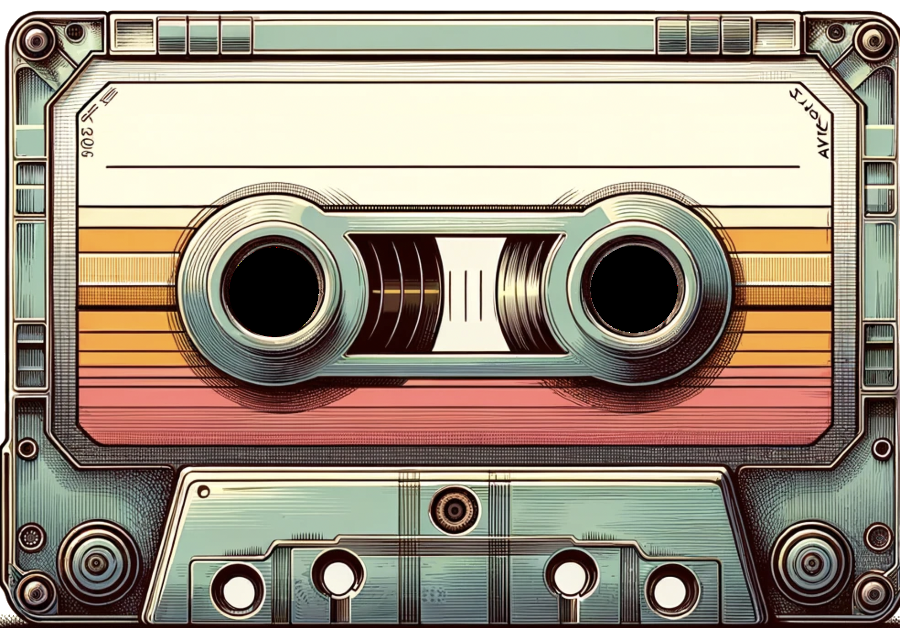
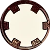
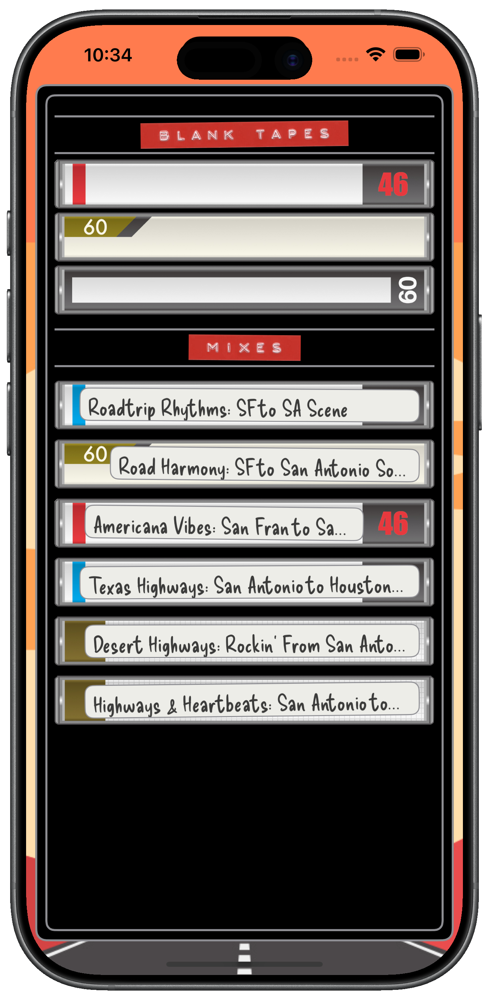
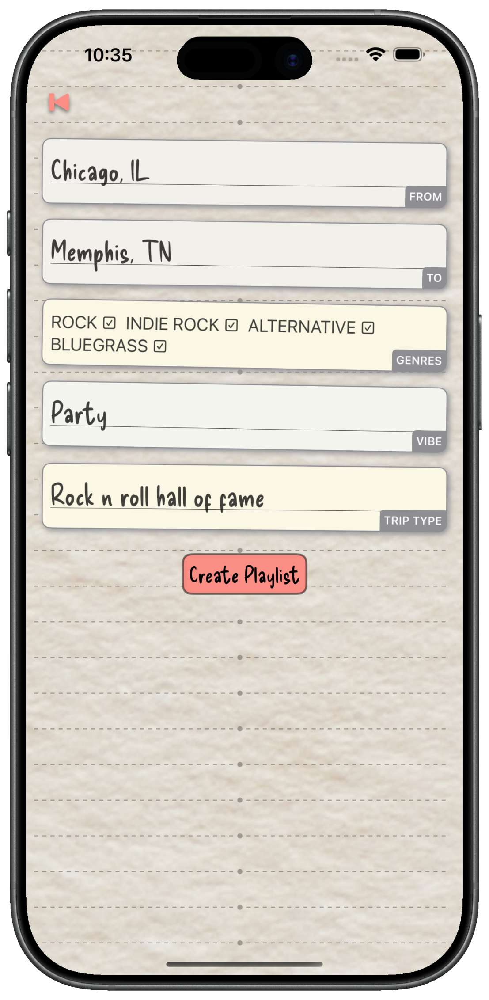
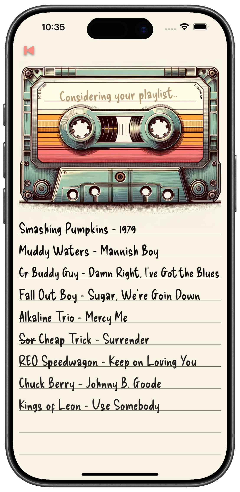
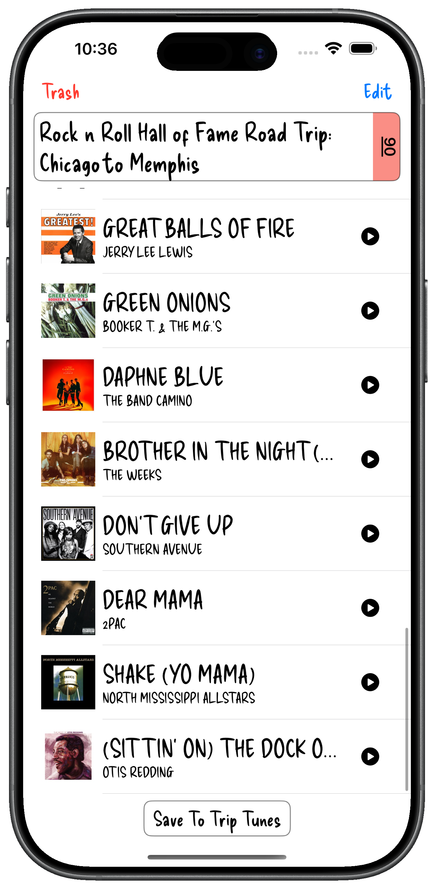
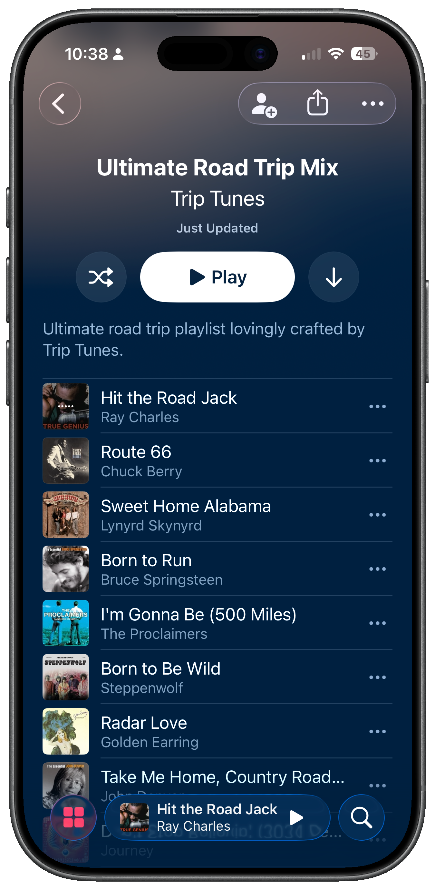
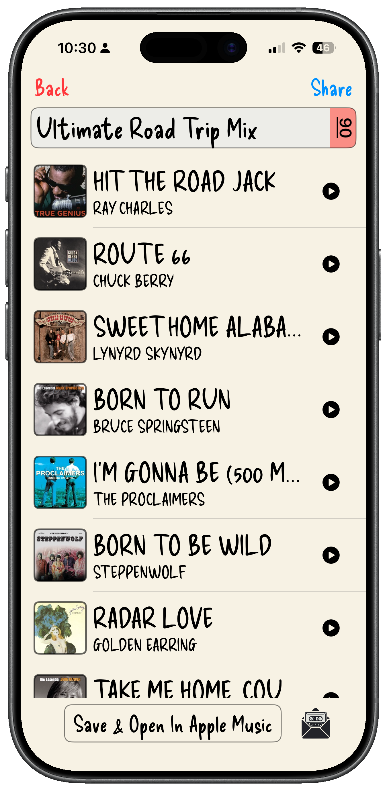
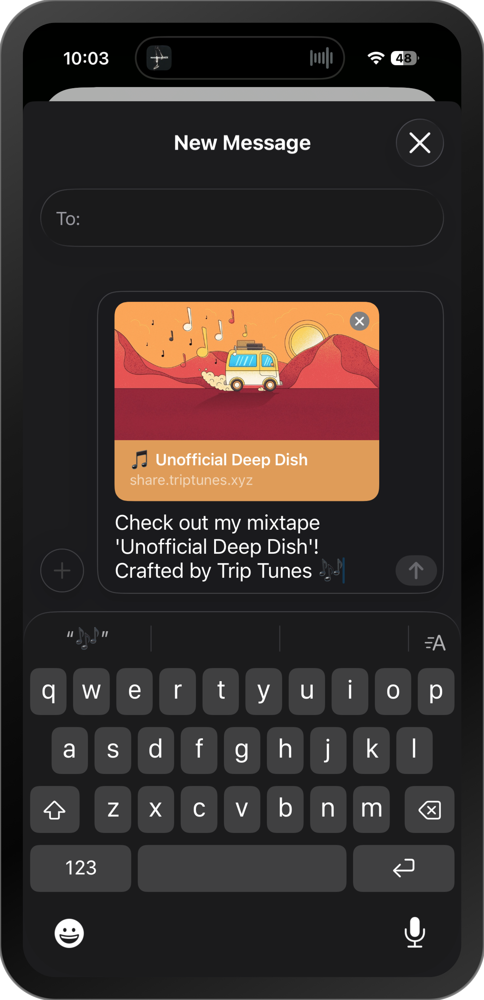

★ Side A · Est. 2024 ★
Tell Trip Tunes where you're going and what you're into. It builds a custom road trip soundtrack inspired by your route, your taste, and the music you'll pass along the way.
Discover local artists, hidden gems, and familiar favorites inspired by the places you'll travel through.



// LET THE TIRELESS ROBOTS DO THE WORK //
Tell us where you're headed, what you're listening to, and the vibe you're after.
Trip Tunes searches far beyond your usual playlists to uncover music connected to the places you'll pass through.
Tweak the tracklist, then save it locally or in Apple Music.
Send mixtapes to friends — no blank tape required.
// FROM BLANK TAPE TO FULL MIXTAPE //

TRACK 01
From, to, genres, and the mood of the drive. A few taps sets the tone.

TRACK 02
The reels start turning while Trip Tunes builds a soundtrack for the road ahead.

TRACK 03
Preview every track and trim anything that doesn't fit before you save.


TRACK 04
One tap and your mixtape is waiting in Apple Music, ready for the drive.
Apple Music is a trademark of Apple Inc. Trip Tunes isn't affiliated with Apple.

TRACK 05
Great road trips deserve great mixtapes. Share yours with a custom cover and a single tap.
Built for people who still believe the music matters.
// ★★★★★ FROM REAL ROAD TRIPPERS //
There's nothing like an old-school roadtrip, and what's the second most important part? Your tunes, of course! (The car is the most important part, for those wondering) Trip Tunes does a phenomenal job of finding the right tunes with just a few taps - so great! And that icon is so great!
Saved me a lot of time by pulling together the perfect playlist for my road trip! I think I might use it for an upcoming party I have planned, too.
I love this app! It really helps kill road trip boredom. I love how it introduces me to artists and songs I don't know. Now I can easily get a playlist for any trip, any mood, any genre!
This app really takes me back to the days of mixtapes with its lovely retro feel. It produces some really cool sound tracks, and integrates with Apple Music.
Well designed little app! Big step up from letting Apple play you random junk. It's kinda fun just seeing what it picks out for you. I like that it's customized to the start and end points of your drive. Worth a look!
Every new traveler gets a handful of blank tapes to create playlists. Need more? Pick up additional tapes anytime, and keep an eye out for surprise gift tapes along the way.
For the full experience you'll need an Apple Music subscription. Without one, you can preview tracks but can't play full songs or save playlists to your library. Trip Tunes isn't affiliated with Apple.
// BUILT FOR THE ROAD · MADE TO SHARE //
Download on theApp Store